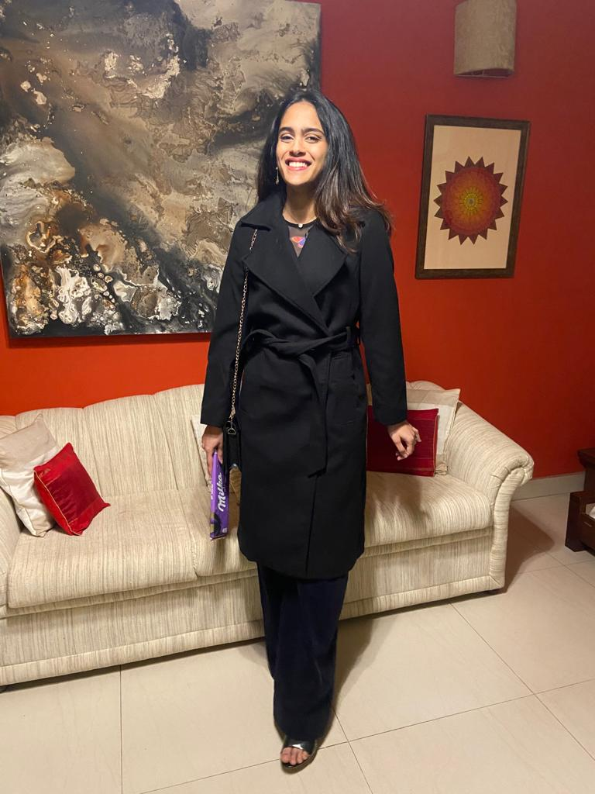

Anoushka
Antony
Behavioural researcher working at the intersection of identity, risk, and mental health.

Who I Am
I'm a final-year Psychology student at Ashoka University, working at the intersection of identity, decision-making, and mental health. My research asks how people relate to their future selves, how gender shapes social cognition, and how care and risk intersect in young people's lives — questions I pursue with a mix of experimental design, qualitative fieldwork, and a lot of curiosity.
I've had the privilege of doing research I actually believe in — from fieldwork with orphaned and separated children in Delhi, to running studies on risk-taking and future identity at Ashoka. Outside the lab, I teach, I make art, and I think good thinking and good creativity are the same muscle.
BSc (Honours) Psychology
2022 – 2026Ashoka University, Sonipat, Haryana
Future Self-Continuity and Risk-Taking among Indian Young Adults
How does the strength of our connection to our future selves shape the risks we take today? This two-study thesis (N≈600) uses a letter-writing intervention and the Columbia Card Task to examine the causal role of future self-continuity on hot and cold decision-making — supervised by Prof. Naseer Ahmad Bhat.
See all research →Identity, Risk & Mental Health
Exploring how people relate to their future selves, how gender shapes social cognition, and how care and risk intersect in young people's lives.
TeachingBuilding Understanding
Designing discussion sessions, mentoring students, and making complex psychological concepts genuinely accessible.
ArtWhere Rigour Ends & Expression Begins
Mixed media — oil, watercolour, digital illustration. A separate world, but the same curiosity that drives the research.